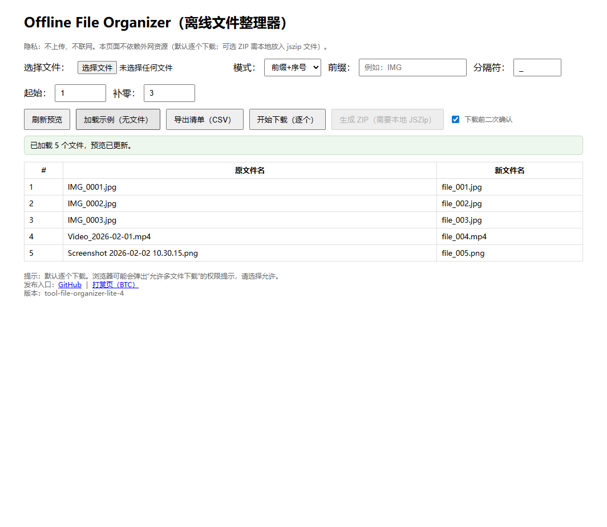

Purpose: select multiple files -> batch rename -> download as a ZIP.
Privacy: no upload, no tracking. Everything stays in your browser.
Start here
- Main tool: Open the main page
- Fully-offline fallback (no JSZip dependency): Open Lite version
- Quick demo: open Lite and click Load demo (no files)
- New (Main + Lite): after generating the rename plan, click Copy CSV to export the plan as CSV text (if clipboard is blocked, it falls back to a textarea for manual copy)
Preview
Lite demo screenshot (Lite supports "Load demo (no files)" for quick understanding):

Tip (important)
Some browsers restrict folder picking APIs under file://.
If you need "Pick a folder", open the project via http://localhost.
This repo includes a zero-dependency helper:
node tools/serve.js (then visit http://localhost:5173).